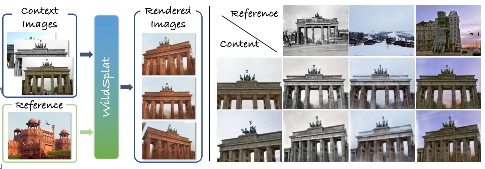
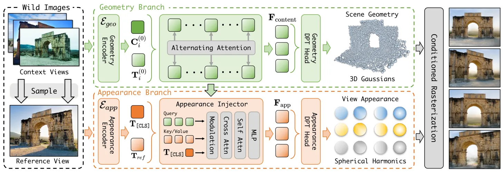

WildSplat：从无位姿野外图像前馈生成高斯泼溅WildSplat: Feedforward Gaussian Splatting from Unposed In-the-Wild Images
对无位姿 3DGS、相机预测和野外光照变化很有价值；更偏 NVS，但可为移动机器人非受控采集的快速场景表示提供参考。
一句话工作总结
无位姿 sparse-view 3DGS 的前馈路线，重点在几何/外观解耦和光照变化鲁棒性。
摘要
WildSplat 面向无位姿、光照不一致的野外图像，提出外观条件化的新视角合成 3DGS 框架。方法通过几何分支提取外观不变结构并联合预测相机位姿，通过外观分支注入目标外观线索，并用多参考联合训练缓解特征纠缠，在稀疏输入下实现单次前向的高质量 NVS 和外观编辑。
While feedforward 3D reconstruction excels at efficient novel view synthesis, it typically falters when faced with scenes under varying illumination. To this end, we introduce WildSplat, the first feedforward 3D Gaussian Splatting framework capable of appearance-conditioned novel-view synthesis for unposed in-the-wild images. To handle inconsistent photometric conditions, we propose a dual-branch architecture that explicitly decouples geometry from appearance. The geometry branch extracts an appearance-invariant 3D structure and jointly predicts camera poses. To govern the rendering appearance, the appearance branch injects target appearance cues into the content features via a globally pre-modulated cross-attention mechanism. To further prevent feature entanglement, we introduce a joint multi-reference training strategy that stabilizes the training process. Extensive experiments show that WildSplat surpasses existing optimization-based and feedforward methods, achieving state-of-the-art performance in in-the-wild novel view synthesis and appearance editing from sparse inputs in a single forward pass.
中文解读摘录
- 链接：https://arxiv.org/abs/2607.05347 ｜ PDF：https://arxiv.org/pdf/2607.05347 ｜ 项目页：https://zju3dv.github.io/wildsplat/
- 中文题名：WildSplat：从无位姿野外图像前馈生成高斯泼溅
- 关键信息：面向光照不一致、无位姿输入的 sparse-view NVS；双分支架构把 geometry 与 appearance 解耦，几何分支同时预测相机位姿，外观分支用目标外观 cue 控制渲染。
- 为什么值得看：相比传统 optimization-based 3DGS，它强调单次前向、无位姿、外观可控，适合观察 3DGS 从离线重建向实时/交互式 sparse-view 场景表示迁移。
- 需要核查：相机位姿预测精度、跨光照条件下几何是否稳定，以及是否能迁移到机器人移动采集的非中心化视角序列。
图表/页面预览
{kind=link}

{kind=link}
